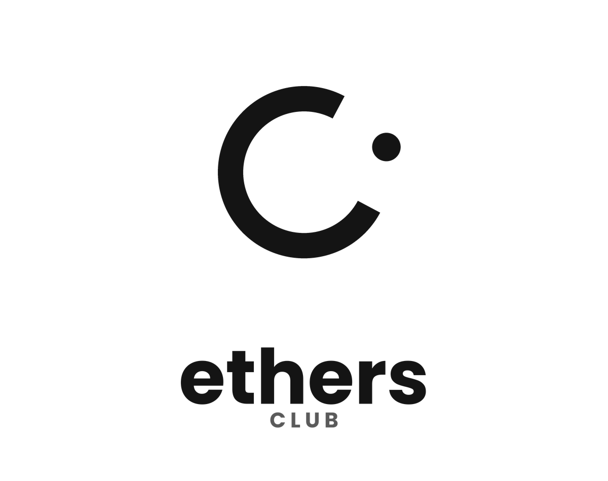

RIGHT NOW
CAMPUS TOOLKIT
Useful without the hunt.
Built for the ordinary questions that interrupt an otherwise good day.
01
Mess menu
Today’s meals, serving windows and the full weekly plan.
↗02Bus timings
Campus departures and return routes in one view.
↗03Campus map
Get oriented before you set off across campus.
↗04Curriculum
Browse the B.Tech structure semester by semester.
↗05Student resources
Contacts, academic links, forms and essentials.
↗06Campus life
Clubs, events, spaces and useful community links.
↗
MADE ON CAMPUS
Useful information belongs in the open.
This is a living student utility. New links, schedules and campus information can be added as they are verified.